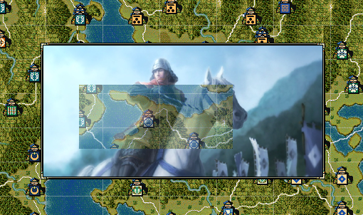

枠は自動では付かない
あくまでも画像を表示するだけなので、枠は画像の方で用意する必要がある。
画像を縦横を「４ピクセルの倍数」とするのが良い。
そうすることで、以下の枠画像を切り張りして、上手く枠を当てはめることが出来るだろう。

png画像は「透明」が入っていても問題はない。完全な透明でなく、「半透明」なども問題なく処理される。

画像を表示するダイアログを表示するAPIです。
大小関わらず、自作の独自イベントなどで利用することになるでしょう。

環境設定の表示速度に応じて、自動的に終了する。
画像ダイアログ表示("picture/abc.bmp");
環境設定の表示速度に応じて、自動的に終了する。
(この他、jpeg等にも対応している。)
画像ダイアログ表示("picture/abc.png");
// Ｘ軸は中央に表示するが、Ｙは上から100ピクセルのところに表示する。
画像ダイアログ表示("picture/abc.bmp", -1, 100);
画像ダイアログ表示("picture/abc.bmp", -1, -1, 画像ダイアログ::手動終了);
画像は指定の6000ミリ秒表示する。
画像ダイアログ表示("picture/abc.bmp", 100, 200, 6000);
あくまでも画像を表示するだけなので、枠は画像の方で用意する必要がある。
画像を縦横を「４ピクセルの倍数」とするのが良い。
そうすることで、以下の枠画像を切り張りして、上手く枠を当てはめることが出来るだろう。
png画像は「透明」が入っていても問題はない。完全な透明でなく、「半透明」なども問題なく処理される。
画像をバラバラのファイルとして持つのではなく、１つのdll内に、複数の画像リソースをパックしてそこから読み出すという方法もあります。
int 画像ダイアログ表示(string 画像源, string 画像ＤＬＬ名, int Ｘ座標, int Ｙ座標, int 終了タイム);
詳細は複数の効果音･画像を１つのDLLに を参照してください。
画像のスチルを利用したいといった場合、比較的新しい信長の野望から画像を流用したいと考えることもあるでしょう。
そういった場合は、RPGViewerによる画像の抽出が役立ちます。
RPGViewerには、天翔記 HD版の項目はありませんが、「信長の野望・創造」に見立てることで抽出することが出来ます。
方法は、HD版の画像の抽出 を参照してください。
「画像ダイアログ」に関する主な所は以上となります。 詳しくは「ダイアログ情報型.h」「ダイアログ情報列挙.h」を参照してください。